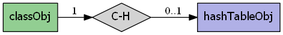
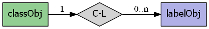
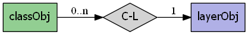
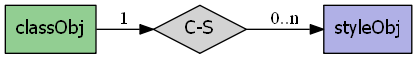

mapscript.classObj¶
- class mapscript.classObj(layer: layerObj | None = None)¶
Overview
The classObj has the following relationships:
   Examples
Class creation:
lyr = mapscript.layerObj() lyr.name = 'foo' c = mapscript.classObj(lyr) assert c.thisown == 1 assert c.layer.name == lyr.name assert c.numstyles == 0
Attributes
debugint TODO Add documentation
groupchar TODO Add documentation
isfallbackint TODO Add documentation
keyimagechar TODO Add documentation
layerlayerObjimmutable TODO Add documentationleaderlabelLeaderObjimmutable TODO Add documentationmaxscaledenomdouble TODO Add documentation
metadatahashTableObjimmutable TODO Add documentationminfeaturesizeint TODO Add documentation
minscaledenomdouble TODO Add documentation
namechar TODO Add documentation
numlabelsint immutable TODO Add documentation
numstylesint immutable TODO Add documentation
refcountint immutable TODO Add documentation
sizeunitsint TODO Add documentation
statusint TODO Add documentation
templatechar TODO Add documentation
thisownThe membership flag
titlechar TODO Add documentation
validationhashTableObjimmutable TODO Add documentationMethods